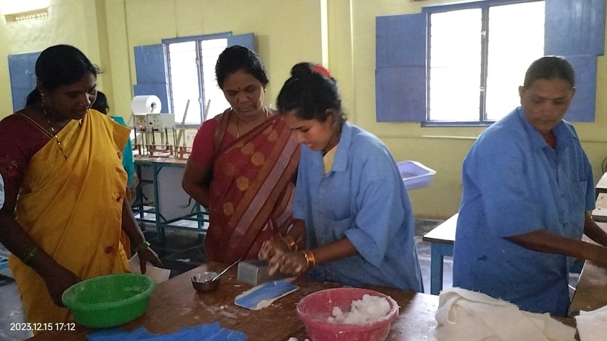
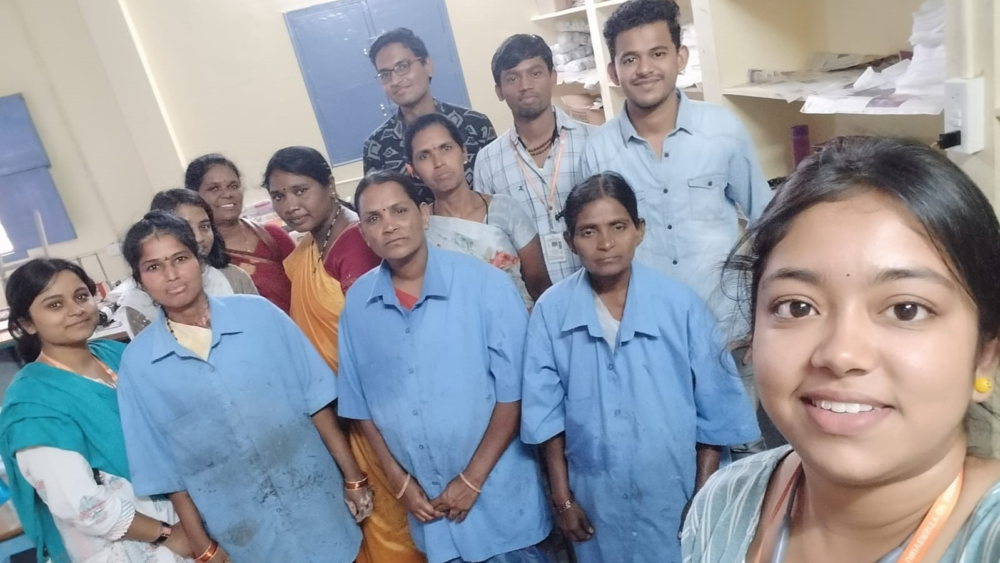
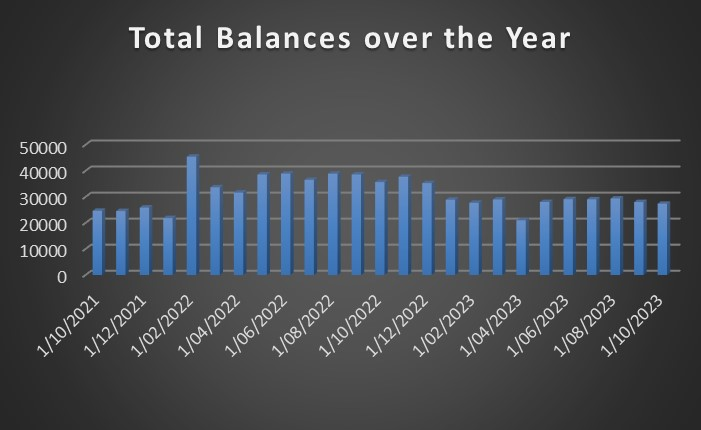

Women Napkin Centre Kalyandurg


In its dedicated efforts to empower women in rural villages, Rural Development Trust (RDT) embarked on a transformative initiative by providing training and employment opportunities. Initially, RDT identified and trained approximately 40 to 50 women from these rural communities, equipping them with skills relevant to existing employment opportunities. This comprehensive training program spanned over six months, preparing the participants to navigate the job market with newfound capabilities. The ultimate goal was to enable these women to secure employment in urban areas, thus enhancing their economic prospects.
Upon successful completion of the training, RDT took a visionary step by establishing a Napkin Centre, specifically designed to create employment opportunities for women from rural areas. This pioneering initiative was launched in the year 2010, with RDT facilitating the setup by providing the necessary machinery for the operation. The Napkin Centre became a catalyst for economic empowerment, aligning with RDT's commitment to uplifting women from marginalized backgrounds.
The core function of the Napkin Centre revolves around the production and distribution of sanitary napkins for women, including pregnant women. To streamline operations, raw materials for the napkins are sourced monthly from Vijayawada. The Centre is equipped with pressing machinery dedicated to the production of these essential items, contributing to women's health and hygiene. Members of the Napkin Centre diligently engage in the production process, creating 75 packets of napkins each month. These napkins are not only distributed to the wider community but also supplied to RDT Hospitals, fostering a collaborative approach to healthcare and women's well-being. The monthly earnings from selling these napkins amount to Rs. 1,40,000, a commendable accomplishment that significantly contributes to the economic sustainability of the Centre.
In a commendable gesture of appreciation, the members receive a profit of Rs. 5,000 per month. This acknowledgement not only recognizes their hard work but also reinforces a sense of ownership and pride in their contributions. The remaining earnings are responsibly deposited in the bank, fostering a culture of savings and financial stability among the members.
The Napkin Centre distinguishes between two types of napkins – small and large. Small napkins cater to the needs of regular women, while large napkins are specifically designed for pregnant women. The Centre packages small napkins in sets of four, priced at Rs. 20 per packet. On the other hand, large napkins are bundled in packets containing ten units, priced at Rs. 75 per packet. This thoughtful categorization ensures that the diverse needs of women are met, promoting both health and dignity. In essence, the Napkin Centre established by RDT stands as a shining example of a sustainable and empowering initiative. By providing training, employment, and creating a platform for women to actively contribute to their households, RDT has catalyzed a positive transformation in the lives of these women. Beyond economic empowerment, the Napkin Centre plays a vital role in promoting women's health, hygiene, and overall well-being. The success of this initiative underscores the profound impact that targeted interventions can have in fostering empowerment, economic resilience, and improved health outcomes in marginalized communities.
Cost Benefit Analysis of Women Napkin Centre Kalyandurg
 >
The above data specifies the total balances of the Napkin Centre at the Kalyandurg town. We now, analysis the data and infer the financial status of the Centre at the Kalyandurg RDT Field Office.
It can be observed that the total balances of the Napkin Centre has been fluctuating at constant time which shows that women at this center has been having a good Standard of Life.
It can be observed that expenses at Napkin Centre has been raising since April 2023 which implies that their savings has been declining for some extent.